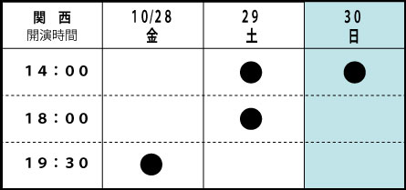
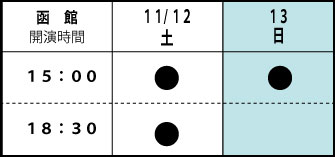
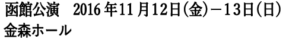
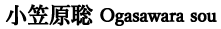
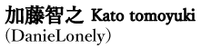
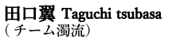
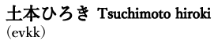

大阪天王寺公園には、かつて青空カラオケと呼ばれる場所があった。
青天井に「勝手に」カラオケ機材を並べ、
「勝手に」酒を飲みながら
一曲百円の歌を「勝手に」がなりたてる場所だ。
その「勝手」さが目に余ったのか、
行政代執行によって撤去され、もう１２年にもなる。
跡形もなく綺麗に整備されたその公園は現代の荒野にも思える。
あそこに集った老いた人たちは、今、どこへ行ってしまったのだろうか。
僕はその中に「リア王」の姿を見た。
自らが育てたものに追われ、
増殖し続ける都市の中にさまよい出ていってしまったのだろうか。
これは、母を探す女の姿と各地で目撃された老婆の情報で構成する報告劇である。

AI・HALL（伊丹市立演劇ホール）
〒664-0846 兵庫県伊丹市伊丹2丁目4番1号
TEL:072-782-2000
Webサイト：http://www.aihall.com/
劇場地図

金森ホール
〒040-0053 北海道函館市末広町14番12号
TEL: 0138-23-0338
前売：3,200円／当日3,500円
ペア：5,500円／ユース割引（22歳以下）：2,000円／高校生以下：1,500円
≪ ネット予約 ≫
CoRich
≪ 劇場予約 ≫
アイホール（窓口・電話予約）
TEL 072-782-2000（火曜定休）
≪極東退屈道場≫
TEL&FAX ：06-6841-3432（ハヤシ）
e-mail ：ticket@taikutsu.info
主催：極東退屈道場
共催：アイホール

前売：2,500円／当日：3,000円
ペア：4,500円／ユース割引（22歳以下）：2,000円／高校生以下1,500円
≪ ネット予約 ≫
CoRich
箱館演劇ラインwebサイト http://www.engeki-fes.com/
≪ 劇場予約 ≫
箱館演劇ライン実行委員会2016
TEL：0138-51-3390 FAX：0138-51-3395
≪極東退屈道場≫
TEL&FAX ：06-6841-3432（ハヤシ）
e-mail ：ticket@taikutsu.info
主催：極東退屈道場
協力：箱館演劇ライン実行委員会
劇団 五期会出身。若いころより新劇女優としての確実なテクニックを身に付ける。２０００年より、リリパットアーミーに参加。 小劇場に参加することでミステリアスな演技に加え『笑い』のセンスも身に付けた。 退団後、ダンサーや歌手とのコラボレーション等、活動の場を広げながら、現在もフリーで活動中。 日本演出者協会近代戯曲リーディング「スカートをはいたネロ」（作：村山知義、演出：林慎一郎）に参加。林慎一郎戯曲への出演は今回が初となる。
大阪芸術大学舞台芸術学科卒。劇団新感線、劇団ヴァダーなどを経て「あらい笑劇場」を立ち上げ。現在はフリー。主な出演作にKUTO-10『後ろ前の子供』(作:三枝希望 演出:林慎一郎)など。極東退屈道場作品には『サブウェイ』（初演・再演・三演）、『タイムズ』（初演・再演）、『ガベコレ』に出演。

劇団ミサダプロデュースで活動後、AI HALLの想流私塾（北村想塾長）出演・入塾を契機に『オダサク、わが友』（作：北村想 演出：深津篤史）、空の驛舎『追伸』など客演。極東退屈道場では『サブウェイ』『タイムズ』『ガベコレ』など連続して出演。その他、清流劇場『賢者ナータン』など。

岐阜県出身。2006年France_pan入団。入団後は同劇団の全作品に出演。France_pan解散後、DanieLonelyに入団し現在活動中。主な出演作に、桃園会『paradise lost, lost』 A級MissingLink『くらげなす、流体力学の基礎知識』、片岡自動車工業『ゼクシーナンシーモーニングララバイ』など。

2005～2009年、エイチエムピーシアターカンパニーに参加。2012年、チーム濁流、結成。 関西の小劇場への客演を中心に活動中。主な出演作に、チーム濁流「ヴォランド」「淑女の宅急便」「秘密結社シャンディ」、エイチエムピーシアターカンパニー「traveler」「Rｉo」他、月曜劇団、空の驛舎、桃園会、もりもり壱座など。

'91に当時の芝居仲間と劇団ろんどんぶりっじを設立。'96同団退団。その後、エレベーター企画（evkk）に参加、数々の劇団に客演を重ね、TV・映画など映像の世界にも活動の幅を広げる。また、タレント養成所、市民劇団等で俳優の指導にもあたっている。 主な出演作に、evkk公演「黒い湖のほとりで」作：デーア・ローアー、葛城市民劇団くすのき「ナツヤスミ語辞典」作：成井豊、evkk公演「戦場のピクニック」作：フェルナンド・アラバールなど。
作・演出：林慎一郎
都市に暮らす人々の姿を、俯瞰的な目線からノイジーに点描することで、切実な哀しみを透明な笑いに変え、その中に蜃気楼のように浮遊する「都市」の姿を切り取ろうと試みている。 代表作に、地下鉄に乗り込む都市生活者を点描した『サブウェイ』(2010年初演)、コインパーキングから狂騒的に「現代」を切り取った『タイムズ』（2012年初演）などがある。 現在、戯曲塾、伊丹想流私塾マスターコース・師範。劇作家、演出家としての活動の他、劇場主催の演劇ワークショップや、小学校、高校の「総合的な学習の時間」などの講師も多数務めている。
振付：原和代1979年富山県生まれ。ダンサー・振付家。91年以降クラシックバレエ・ジャズダンス・声楽を学ぶ。京都精華大学在学中よりダンス作品の出演、創作活動を開始。ENTEN・ポポルヴフでの活動を経て、自作のソロ作品を東京・大阪で発表。2000年Ailey school・Martha Graham School(NY)にてモダンダンスなど研鑽を積む。 また96年より演劇作品の振付を多数手掛け、近年では劇作家との協働作業を積極的に行い、劇世界の質感を表出する為のダンスとして演出面にも深く関わる。劇団・ワークショップでの身体表現指導やバレエ講師を務めるなど指導者としての活動も意欲的に行っている。 現在、大阪を拠点に活動中。MRB松田敏子リラクゼーションバレエ所属。神戸学院大学人文学部芸術文化コース非常勤講師。2016年Seoul Choreography Festivalファイナリスト。
舞台美術：柴田隆弘
照 明：魚森理恵（Gekken staff room）
音 響：あなみふみ（ウイングフィールド）
舞台監督：塚本修（CQ）
衣 装：大野知英（iroNic ediHt DESIGN ORCHESTRA）
宣伝美術・舞台写真：清水俊洋
制 作：尾崎雅久（尾崎商店）
制作協力：奈良歩 さかいひろこworks